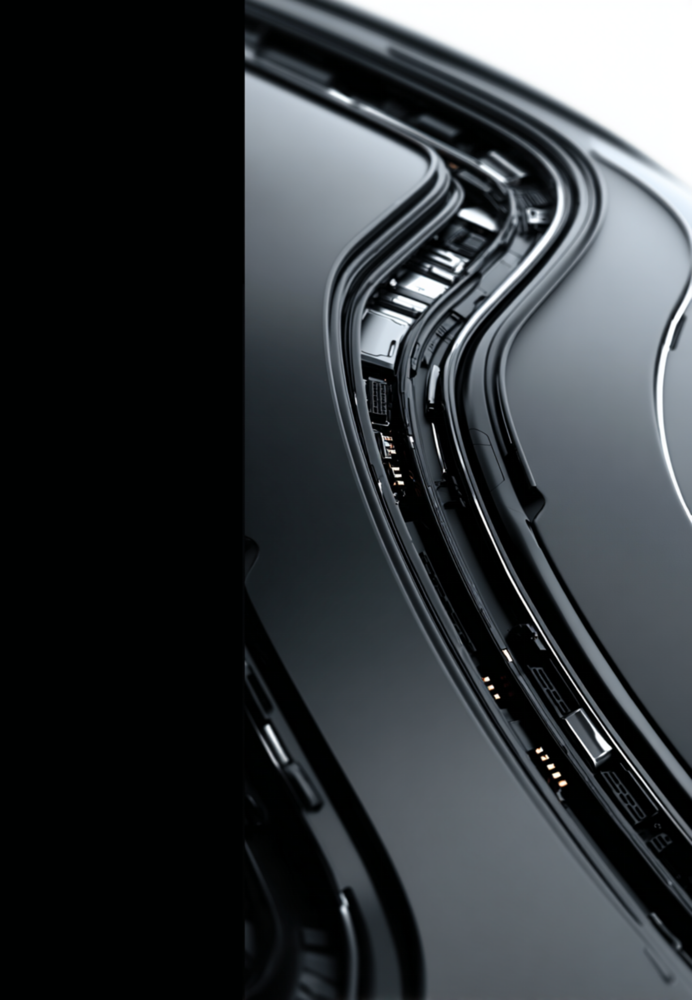
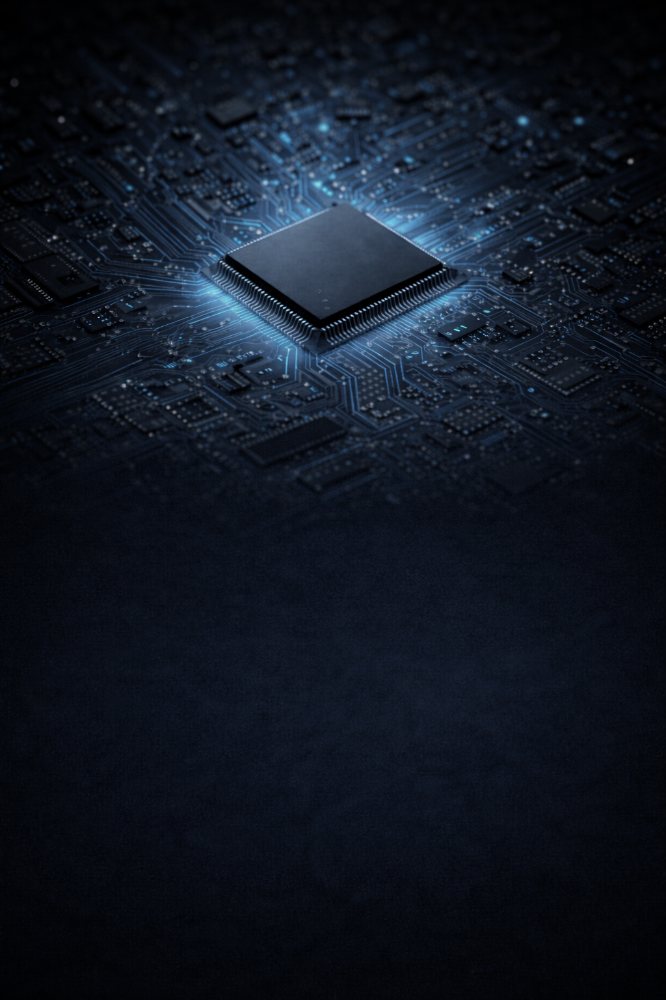

AI SIGNAL · AI INDUSTRY MAGAZINE
2026 · H1
智向
2026 AI 行业趋势与实践
趋势洞察
技术范式
产业变革
产品演进

SUMMARY
02
2025 年度 AI 十大趋势总结
SECTION 01 · 技术范式
03
Agent 与具身智能
SECTION 02 · 产业变革
04
AI 产业格局
05
六大 AI 巨头战略比较
06
企业级 AI 实践
SECTION 03 · 产品演进
07
面向消费者的 AI 产品
08
图像 / 视频生成技术前沿
SECTION 04 · 趋势洞察
09
2026 AI 趋势预测及产业战略展望
点击条目跳转 · 页码后续可调整

2025 AI ANNUAL REVIEW
2025年度 AI 十大趋势：
迈向“伙伴时代”的科技进化
迈向“伙伴时代”的科技进化
年度人工智能发展回顾与趋势报告
来源：量子位智库《2025年度AI十大趋势报告》 & 全球前沿产业数据综述
2025年，AI进入深水重构期，从底座到生态全面重写。算力战略化、模型工程化、应用多维化，中国步入加速窗口。人工智能正在成为全球科技与产业竞争的决定性力量。
本报告提炼十大趋势，勾勒AI全年演进脉络，提供一个面向未来的理解框架。
INFRASTRUCTURE / MODELS / APPLICATIONS / CHINA TIME
PART 1 · INFRASTRUCTURE
PART 1 基础设施
2025 年，算力与芯片成为智能时代的“水电煤”。全球 AI 需求激增，
算力作为关键资源上升为国家级战略资产。
与此同时，芯片架构加速向 AI 原生方向演进，国产算力生态快速成型，
正在重塑智能产业的底层格局。
01
算力基建化
算力正由资源型资产转变为战略性基础设施。全球AI算力需求激增，各国竞逐建设“算力工厂”，2025年云厂商在专用算力上的投入高达2980亿美元。中国通过
“东数西算”
等项目加速全国算力统筹，并探索“太空超级计算机”等前沿路径，
算力基础的重构，正成为AI落地能力与国家科技主权的决定性变量。
国家算力网络
02
芯片 AI 化
AI 原生需求正在推动芯片从通用架构向专用化演进。GPU受限于供应瓶颈，NPU、ASIC（专用集成电路）、 FPGA等 专用芯片。加速崛起，终端侧智能硬件迎来爆发。
中国正以“模型+芯片+SDK”构建全栈国产算力体系，成功支撑千亿级模型训练。芯片AI化的深化，将决定AI能力的边界与主导权归属。
国产芯片生态
PART 2 · MODEL EVOLUTION
Part 2 模型进化
2025年的模型竞赛不再一味追求参数规模，而是转向架构优化与推理效率。
预训练决定梯队，推理决定落地，同时模型正在走向能理解并作用于物理世界的“具身系统”。
03
架构创新：预训练决定梯队，MoE 架构决定高度
大模型格局正由预训练能力划出分层，核心突破转向底层架构创新。在算力受限背景下， 混合专家（MoE）模型 成为主流，“大参数、小激活”实现规模与效率兼顾。中国多家头部团队已广泛采用。与此同时，
线性注意力、稀疏注意力
等新机制崛起，用以突破长序列计算瓶颈，模型结构正从Transformer出发迈向更高效的新范式。中国头部模型团队普遍采用上述路径；
例如
悟道 2.0
展示了在架构侧提升容量与效率的可行路径。
04
推理革命：大模型落地进入“推理时间”
2025 年，大模型落地全面进入“推理时间”。复杂任务需求推动模型从“直觉快思考”走向“逻辑慢思考”，
Test-Time Compute
成为新范式；与此同时，海量实时推理场景倒逼模型在结构压缩、算子优化与高效部署上持续革新。
为了让模型能跑在手机、PC、汽车等终端上，
模型蒸馏
与
端侧推理
成为刚需。以
本地化推理
的进展为大规模应用铺平道路。
05
具身智能崛起，信息AI与物理AI汇流
AI正从理解世界迈向操控世界。信息领域的大模型应用已成规模，而物理场景的智能化刚起步。具身智能成为关键合流口，
VLA（视觉-语言-动作）模型
和
世界模型
构建起AI连接原子与比特的能力边界。机器人不再是“头脑简单、四肢发达”的代名词，正被大模型赋能为
可感知、可规划、可执行的智能体。 。
PART 3 · APPLICATION LANDSCAPE
Part 3 应用版图
当底层能力趋于成熟，AI 应用在 2025 年大幅扩张：从信息世界走向物理世界，
从“工具”进化为“伙伴”。Agent 重塑人机交互与流量入口，多模态与 AI4S
把生产力与科研范式一起推到新阶段。
06
AI重塑流量入口：PC互联网、移动互联网、Agentic互联网
互联网入口从搜索与 App 向 Agent 迁移。用户只需表达意图，Agent 即可规划与执行，
形成“服务找人”的新分发逻辑，成为用户与数字世界交互的
“唯一入口”
。
07
多模态AI应用落地关键：视频、3D、代码依次展现生产力
多模态不再是“演示能力”，而是成为了实质性的生产力工具。未来，视频、3D内容和软件开发的边际成本将趋近于零，
“创意产业和软件工程”
将迎来效率爆炸。
08
AI硬件百端齐放：终端设备的集体“焕脑”时刻
AI 从 PC 与手机溢出，进入眼镜、车载、玩具与各类带电设备。
端侧算力提升与模型小型化叠加隐私与低延迟诉求，推动“本地智能”成为标配。
“代表设备”
提示新一轮换机潮正在形成。
09
AI4S 突破：AI 晋升为博士级“科研合作伙伴”
AI for Science 在生物、材料与数学证明等领域出现质变：从数据处理走向科学推理，
显著压缩研发周期，并被视作通向 AGI 的关键路径之一。
“为什么重要”
也成为大国科研竞争的新战线。

PART 4 · CHINA TIME
Part 4 中国时间
2025年，中国AI全面提速，从应用落地迈向底层创新主导。自主芯片、开源模型、国家算力网络等基础工程加速成型，AI硬件、科研与开源生态多线突破。中国正以独有路径重塑AI格局，从“跟跑”走向“领跑”，为通往AGI提供一条具有全球影响力的“中国路线”。
10
开源AI进入中国时间：AGI 拥有中国路线
中国正从AI创新的“跟跑者”转向“路线制定者”。2025年，开源大模型成为中国打通技术自主、生态建设与国际影响力的核心抓手。
“通义千问”
、DeepSeek等国产模型跻身全球主流，Qwen单月下载量已超越LLaMA等国际巨头，中国正式进入开源AI“第一阵营”。借助庞大市场、算力网络与全栈自研体系，中国正走出一条通向AGI的独立路径，并重塑全球开源力量格局。